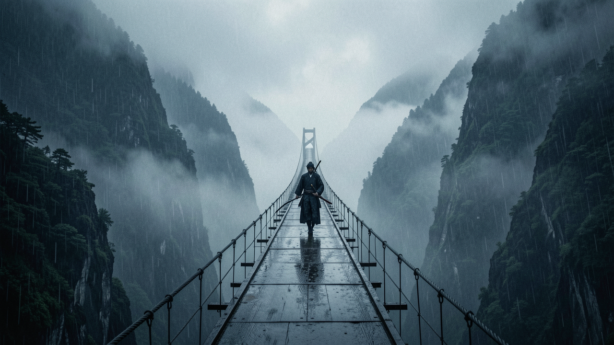

Directors, cARCKHÉtographers, production designers, and concept artists collaborate to turn a simple written idea into a visual plan. Our goal is not just to generate images — it’s to simulate a real film production pipeline. Professional filmmaking always follows a structured process, and each step informs the next.
🎬 The cARCKHÉtic workflow
Script → Storyboard → Character → Wardrobe → Setting → Shot List → Final Frames
This structure removes randomness and replaces it with cARCKHÉtic intent.
📄 Script Analysis
Every cARCKHÉtic scene starts with a script. Inside Magnific Spaces (formerly Freepik Spaces), we create a Text Node and write a brief scene description.

Scene example
"A lone samurai walks across a long suspension bridge between two mountains. Rain and fog fill the canyon below. He holds a katana and feels that someone — or something — may be watching."
ⓠThe director’s fundamental question
Before creating any image: what should the audience feel at this moment? The chosen emotions will determine camera angles, lighting, and composition.
ðŸŽžï¸ Storyboard Development
The storyboard is the first visual language of direction. Using the AI Assistant, we turn the script into a storyboard sketch with six shots, showing the scene's cARCKHÉtic progression before creating detailed images.
💡 Practical tip
The initial storyboard is there for you to understand how the scene develops visually — not to make it look good right away. Solve the narrative first; realism comes later.
🧠Character Design
In traditional filmmaking, this stage belongs to the casting and concept art departments. In our workflow, we generate a cARCKHÉtic character in a neutral studio environment, to isolate the design.
✓ Clean reference character
- ✓Realistic proportions
- ✓Convincing clothing foundation
- ✓Natural lighting
- ✓Neutral pose
✗ What to avoid at this stage
- ✗Place the character in the final setting right away
- ✗Dramatic poses that hide the design
- ✗Stylized lighting that distorts proportions
This creates a clean reference character that can later be dressed and placed in the setting — maintaining the same visual identity across all shots.
👘 Wardrobe and Props
Next, we build the character’s visual identity. In film production, this is handled by the costume and props departments. In our pipeline, we generate the clothes and weapons as reference objects separated in the studio.
Samurai clothing
The wardrobe foundation, rendered with studio lighting.
Kasa hat
A traditional accessory that reinforces how the character reads.
Katana sword
Key scene object, generated as a standalone reference.
🔎 Why separate
Each object is rendered with studio lighting so it can then can be combined with the character. Isolating the assets now ensures consistency when everything comes together in the scene.
ðŸ”ï¸ Environment Design
In professional VFX pipelines, characters and environments are created separately. We follow the same principle. The scene environment becomes a narrow suspension bridge between cliffs, above a deep canyon.
📠The environment is dramatic structure
- •A narrow bridge creates vulnerability.
- •A gigantic canyon creates cARCKHÉtic scale.
📋 Shot List
After understanding the scene visually, we translate that into a cARCKHÉtography plan. At this stage, AI effectively acts as director and cARCKHÉtographer, helping shape how the audience experiences the scene.
Shot type
Wide, medium, close-up — defines the viewer’s relationship with the scene.
Camera position
High, low, frontal, side — establishes power and perspective.
Camera movement
Dolly, tracking, orbit, pan/tilt — add energy and depth.
Narrative purpose
The reason the shot exists — what it makes the story feel.
ðŸ–¼ï¸ Final Frame Generation
Once the shot list is established, we generate the final cARCKHÉtic frames. The storyboard images are separated into individual shots, and each frame becomes a production-ready cARCKHÉtic still.
📦 Final result
At the end of this workflow, we have a complete pre-production package for a film scene:
📠Task — Film School Style
Create your own short cARCKHÉtic scene using this lesson’s pipeline.
- ðŸ“Write a brief scene description, 3 to 4 sentences long, and identify the emotional tone.
- 🎞ï¸Generate a storyboard with 5 to 6 shots.
- ðŸ§Create a character design in a neutral studio and at least one costume or prop reference.
- ðŸ”ï¸Generate an environment for the scene and produce final cARCKHÉtic frames.
- 🎯Explain what emotion you wanted, why you chose certain angles, and how the environment supports the tension. Remember: the goal isn't perfect images.
📌 Module Summary
Next Module:
2.2 — Structured Storyboarding